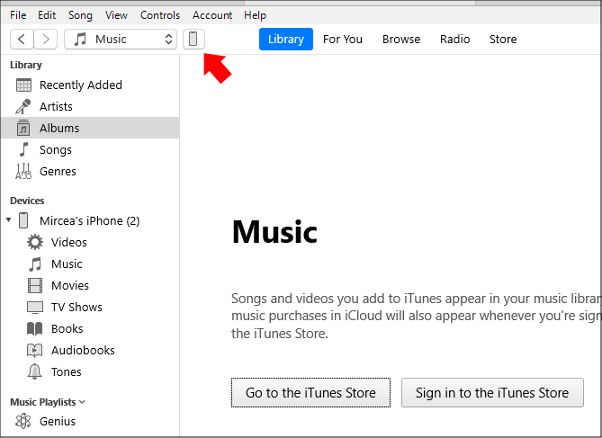
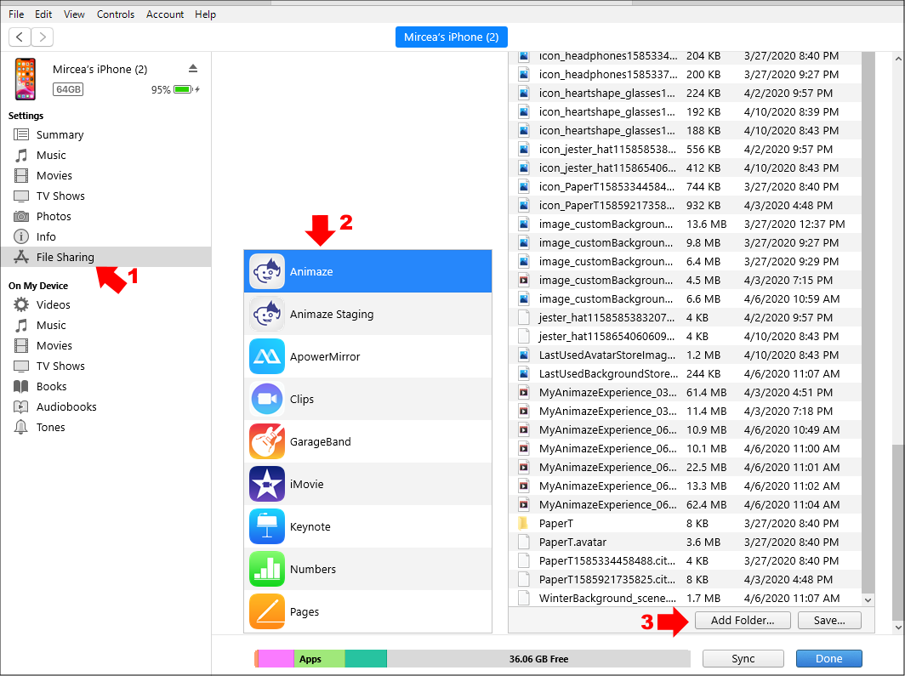
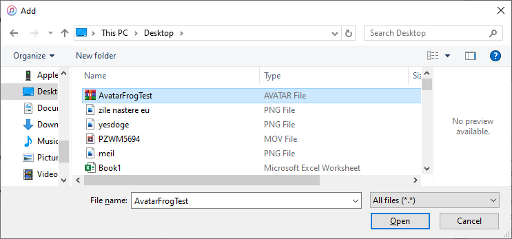
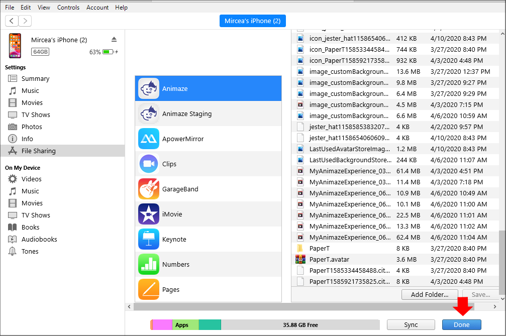

.avatarファイルをiOSアプリのAnimazeに送信する方法（WindowsにおいてiTunesを経由）
.avatarファイル形式は、3D/2Dアバター、小道具、背景など、複数の種類のアバターを保管するコンテナの役割を果たします。
.avatarファイルが既に準備できている場合、以下の手順により、iTunesからiPhoneに送信することができます。アーティストパスが必要です。設定 > Animazeエディター > エディターに接続 > 接続から、iOSモバイルアプリでアーティストパスを購入してください
エディターは以下の手順に従ってください：
-
デバイスをコンピューターに接続して、iTunesを開きます。デバイスを信頼するかどうか尋ねられた場合は、「はい」を選択します。
-
iTunesウィンドウの左上隅にあるデバイスのアイコンをクリックして、iPhoneを表示します

-
左側のメニューにある（1）「ファイル共有」のボタンをクリックして、（2）Animazeアプリを選択し、（3）「フォルダーを追加」を押します

-
.avatarファイルを選択して、そのファイルを保管している場所から開きます

-
ファイルがアバターギャラリーに追加されますので、「終了」をクリックします。

-
Animazeアプリを再起動し、新しく追加したアバターをギャラリーで見つけます